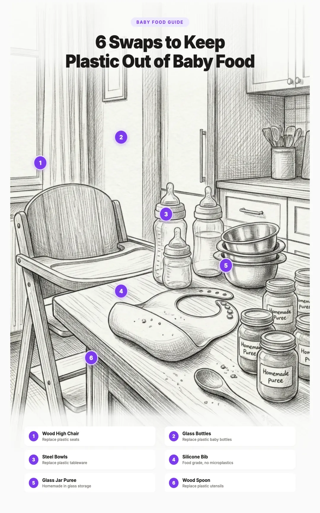

Microplastics in Baby Food: What Parents Need to Know (and the Safest Feeding Setup)
Babies are consuming more microplastics than adults. A lot more. A 2021 study published in Nature Food found that infants fed from polypropylene bottles ingest up to 16 million microplastic particles per liter per day. Their tiny bodies are processing these particles during the most critical window of development, when organs are forming and the immune system is still learning what belongs and what does not.
The sources go well beyond bottles. Baby food pouches, plastic bowls and plates, formula containers, sippy cups, teething toys, and even the way food is heated and stored all contribute. The good news is that building a safer feeding setup is straightforward once you know what to look for and what to avoid.

1. Why Babies Face Higher Exposure
Babies are not just small adults when it comes to microplastic exposure. Several factors make their situation fundamentally different:
- Higher intake relative to body weight. A baby weighing 10 pounds consumes proportionally far more food and liquid per pound of body weight than an adult. This means any contamination in their food is concentrated more heavily in their system.
- More plastic contact with food. Baby bottles, sippy cups, squeeze pouches, and snack containers mean that nearly every meal and drink passes through or sits in plastic. Adults eat from ceramic plates and glass cups far more often.
- Heat exposure. Formula and breast milk are warmed in bottles. Baby food is microwaved in containers. Every time plastic is heated, microplastic release accelerates dramatically.
- Developing organs. A baby's liver, kidneys, and detoxification systems are still maturing. Their ability to process and eliminate foreign particles is significantly lower than an adult's.
- The blood brain barrier is still forming. Nanoplastic particles small enough to cross the blood brain barrier may have easier access in infants, whose barrier is not yet fully developed.
- Mouthing behavior. Babies put everything in their mouths. Toys, teethers, books, furniture, shoes. Each plastic item they mouth is a direct ingestion pathway.
2. Baby Bottles: The Biggest Source
The single largest source of microplastic ingestion for formula fed babies is the bottle itself. The landmark 2020 study from Trinity College Dublin tested polypropylene (PP) baby bottles, which account for 82% of the global baby bottle market. Their findings were striking:
- Bottles released 1.3 to 16.2 million microplastic particles per liter depending on temperature.
- At the WHO recommended formula preparation temperature of 70°C (158°F), release was at the high end.
- Shaking the bottle (standard practice for mixing formula) further increased particle release.
- Sterilization with boiling water caused the highest release of all.
- Repeated use and washing did not decrease release over time.
The study estimated that infants globally are exposed to an average of 1.6 million microplastic particles per day from bottles alone. In regions where sterilization practices involve boiling water directly in the bottle, exposure was even higher.
The "BPA Free" Problem
After BPA was banned from baby bottles in 2012, manufacturers switched to other plastics, primarily polypropylene. This was marketed as a safety improvement, but the Trinity College study tested specifically these "BPA free" polypropylene bottles. The microplastic release was enormous regardless of BPA content. BPA free does not mean plastic free, and the physical particles themselves carry their own risks independent of any specific chemical.
Some manufacturers also switched to Tritan (a copolyester), which is marketed as BPA free and shatter resistant. While Tritan may not release BPA specifically, it is still plastic and still releases microplastic particles when exposed to heat and mechanical stress.
Safer Bottle Materials
| Material | Microplastic Release | Safety Rating | Notes |
|---|---|---|---|
| Borosilicate Glass | Zero | Best | Lab grade glass. Completely inert at all temperatures. |
| Stainless Steel | Zero | Best | Unbreakable. Harder to see fill level. Use 18/8 (304 grade). |
| Silicone Sleeve Glass | Zero from glass | Best | Glass with protective silicone coating. Best of both worlds. |
| PPSU Plastic | Lower than PP | Moderate | More heat stable than PP, but still plastic. |
| Polypropylene (PP) | Up to 16M particles/L | Avoid | Most common bottle material. Highest documented release. |
Important note about nipples: All baby bottle nipples are made from either silicone or latex. There is currently no glass or metal alternative. Medical grade silicone nipples are the best available option. They are more heat stable than latex and do not release traditional microplastics. The contact area between the nipple and the liquid is small compared to the bottle body, so the overall exposure from a silicone nipple on a glass bottle is dramatically lower than from an all plastic bottle.
3. Formula Preparation and Storage
How you prepare and store formula matters as much as what bottle you use.
Mixing Temperature
The WHO recommends preparing formula with water at 70°C (158°F) or above to kill harmful bacteria like Cronobacter. This is the right recommendation for food safety, but it is also the temperature range that maximizes microplastic release from plastic bottles. The solution is not to use cooler water (that creates a real bacterial risk). The solution is to use a glass or stainless steel bottle so that temperature becomes irrelevant.
Formula Packaging
Formula itself comes in contact with plastic before it ever reaches your kitchen:
- Powdered formula in metal cans is the best option from a plastic perspective. The can interior may have a lining, but the dry powder has minimal contact with it. Look for brands that specify BPA free can linings.
- Ready to feed formula in plastic bottles is convenient but means the liquid formula has been sitting in plastic for the entire shelf life. If you use ready to feed, transfer it to a glass bottle immediately rather than feeding directly from the plastic container.
- Single serve packets are foil lined and have minimal plastic contact. A good option for travel.
The Plastic Scoop Problem
Nearly every formula container comes with a plastic scoop that sits inside the powder. This scoop contacts the formula with every use. While the exposure from a brief scoop is small compared to a bottle, it is easy to eliminate: use a stainless steel measuring spoon instead and keep the plastic scoop out of the container after noting the correct measurement.
- Heat water in a glass or stainless steel kettle
- Pour into a glass or stainless steel bottle
- Add powder using a stainless steel measuring spoon
- Shake, cool, and feed
4. Baby Food: Pouches, Jars, and Homemade
When babies transition to solid foods, the packaging becomes the primary concern.
Pouches (Avoid When Possible)
Baby food pouches are enormously popular because they are convenient and mess free. But from a microplastic perspective, they are one of the worst packaging options:
- Pouches are made from multiple layers of plastic and aluminum laminated together. The inner layer that contacts food is typically polypropylene or polyethylene.
- The food sits in contact with this plastic for weeks or months at room temperature during its entire shelf life.
- Acidic foods (fruits, tomato based purees) accelerate chemical migration from the plastic into the food.
- Squeezing the pouch creates mechanical stress that can release additional particles.
- The plastic spout that babies suck on adds another direct oral plastic contact point.
A 2023 study published in Environmental Science & Technology found measurable concentrations of phthalates and other plastic additives in baby food from pouches at levels higher than the same foods in glass jars.
Glass Jars (Best Store Bought Option)
Baby food in glass jars is the safest commercially available option. Glass is completely inert and does not leach any chemicals regardless of temperature, acidity, or storage duration. The metal lid may have a lining, but the food contact area is almost entirely glass.
Brands like Beech-Nut and Once Upon a Farm offer baby food in glass jars. When shopping, check the container material rather than the brand name, as some brands use glass for certain products and pouches for others.
Homemade Baby Food
Making baby food at home gives you complete control over the process. The key is using the right equipment:
- Cook in stainless steel pots. Avoid nonstick coatings (PTFE/PFAS) and plastic steamer baskets.
- Blend in a glass blender jar or use a stainless steel immersion blender. Avoid plastic blender cups.
- Store in glass containers. Small mason jars or glass baby food storage containers with silicone or stainless steel lids work perfectly.
- Freeze in silicone ice cube trays (at freezer temperatures, silicone is stable) then transfer frozen cubes to a glass container.
5. Heating Baby Food Safely
How you heat baby food is just as important as what you serve it in. Heat is the single biggest accelerator of microplastic release from any plastic container.
The Microwave Problem
A 2023 University of Nebraska study found that microwaving food in plastic containers released up to 4.2 million microplastic particles and 2.1 billion nanoplastic particles per square centimeter of container surface. Even containers labeled "microwave safe" released significant quantities. The "microwave safe" label only means the container will not melt or deform. It says nothing about chemical or particle migration into your food.
Safe Heating Methods
- Best: Water bath. Place the glass jar or container in a bowl of warm water. This heats food gently and evenly without any plastic contact. It takes a few extra minutes but is the safest approach.
- Good: Stovetop in a small pot. Transfer food to a small stainless steel pot and warm on low heat. Stir frequently to distribute heat evenly.
- Acceptable: Microwave in glass or ceramic only. If you microwave, always transfer the food to a glass or ceramic dish first. Never microwave food in plastic, even if the container says microwave safe.
6. Plates, Bowls, Cups, and Utensils
Once food is safely prepared and heated, the next concern is what your baby eats from.
Plates and Bowls
| Material | Safety | Durability | Best For |
|---|---|---|---|
| Stainless Steel | Best | Unbreakable | Daily use. Suction base versions available for babies. |
| Food Grade Silicone | Good | Very durable | Suction plates. Great for baby led weaning. |
| Ceramic | Best | Breakable | Supervised meals. Use lead free glazed ceramic only. |
| Bamboo | Check adhesives | Moderate | Look for products bonded without melamine or formaldehyde resin. |
| Melamine | Avoid | Durable | Releases melamine and formaldehyde, especially with hot food. |
| Plastic (PP, PS) | Avoid | Durable | Microplastic release, especially with hot or acidic food. |
A note on suction bases: Many parents rely on suction plates and bowls to keep food on the highchair tray. Silicone suction plates are a practical solution here. The food grade silicone is more stable than hard plastics, and at room or warm food temperatures, the exposure is minimal compared to hot liquids in plastic bottles.
Utensils
Baby spoons and forks are commonly made from plastic. Safer alternatives:
- Stainless steel baby spoons with silicone coated tips (gentle on gums while keeping the food contact surface metal).
- Full silicone spoons for younger babies who are just starting solids. Food grade silicone is more stable than hard plastic.
- Bamboo or wood utensils are a natural option, though check that any coating is food safe.
7. Sippy Cups and Straw Cups
The transition from bottle to cup introduces a new set of plastic concerns. Most sippy cups on the market are made entirely from plastic with silicone valves and spouts.
Safer Sippy Cup Options
- Moonkie Silicone Training Cup: 100% food grade silicone with handles and a soft spout. Lightweight, easy for small hands to grip, and completely free of plastic, BPA, and PVC. A great first sippy cup for the transition from bottle.
- Klean Kanteen Kid Sippy: Stainless steel body with a silicone spout. The liquid contacts only stainless steel and a small silicone valve.
- Pura Kiki Stainless Steel: Medical grade stainless steel bottle that converts from bottle to sippy to straw cup as baby grows. Silicone nipples, spouts, and straws. No plastic ever touches the liquid.
- Open cup practice: The AAP recommends introducing an open cup around 6 months. A small stainless steel or ceramic cup eliminates plastic entirely. Yes, it is messy. But babies learn faster than you expect.
8. Teething Toys and Pacifiers
Teething babies chew on things for hours. Whatever they chew on ends up in their mouth and stomach. This makes teething toy material especially important.
Materials to Choose
- Natural rubber (like Sophie la Girafe) is made from the sap of the Hevea tree. It is naturally soft, flexible, and free of PVC, phthalates, and BPA.
- Untreated hardwood (maple, beech) teethers are a traditional choice. Make sure the finish is food safe or unfinished.
- Medical grade silicone teethers are heat stable and do not release traditional microplastics.
- Frozen washcloths (organic cotton) are a zero waste teething solution that many parents swear by.
Materials to Avoid
- PVC (vinyl) teethers almost always contain phthalates as softeners. PVC is the most toxic common plastic.
- Cheap imported plastic teethers may contain lead, cadmium, and other heavy metals in addition to plastic chemicals.
- Plastic teething necklaces marketed for parents to wear have been recalled repeatedly for breakage and choking hazards, and the plastic is in constant mouth contact.
Pacifiers
Pacifiers are made from either silicone or natural rubber (latex). Both are reasonable choices:
- Natural rubber pacifiers (like Natursutten) are softer and made from a single piece of natural rubber with no joints or cracks where bacteria can hide.
- Medical grade silicone pacifiers are more durable and easier to clean. Look for one piece designs.
Avoid pacifiers with plastic shields or decorative plastic elements. The shield sits against baby's face for extended periods and is frequently mouthed along with the nipple.
9. Water for Mixing and Drinking
The water you use for formula, food prep, and eventually for your baby to drink is another potential source of microplastics.
Tap Water vs Bottled Water
A 2018 study testing 259 bottled water brands found that 93% contained microplastic contamination, with an average of 325 particles per liter. Some brands had over 10,000 particles per liter. The plastic comes from the bottle itself and the bottling process.
Tap water also contains microplastics, but generally fewer than bottled water. The real solution is filtration.
Best Filters for Baby Water
- Reverse osmosis (RO) removes up to 99.9% of microplastics along with heavy metals, PFAS, and most contaminants. This is the most thorough option. Under sink units are the most practical for daily use.
- Gravity fed ceramic/carbon filters (like Berkey or Propur) effectively remove microplastics through physical filtration. No electricity or plumbing required.
- NSF 401 certified pitcher filters can remove some microplastics, though they are less effective than RO or gravity filters.
For a detailed comparison of water filtration options, see our guide to removing microplastics from drinking water.
10. The Complete Safe Feeding Setup
Here is the full recommended setup, organized by stage. You do not need to replace everything at once. Start with bottles and heating practices (the highest impact changes) and work through the rest over time.
Newborn to 6 Months (Liquid Only)
- Bottles: Borosilicate glass with silicone nipples
- Formula prep: Stainless steel kettle, glass bottle, stainless steel measuring spoon
- Breast milk storage: Glass storage bottles or food grade silicone bags
- Water: Filtered through RO or gravity fed system
- Pacifiers: Natural rubber (one piece design) or medical grade silicone
6 to 12 Months (Starting Solids)
- Everything above, plus:
- Baby food: Homemade in glass containers, or store bought in glass jars
- Heating: Water bath or stovetop in stainless steel. Never microwave in plastic.
- Plates and bowls: Stainless steel with suction base, or silicone suction plates
- Spoons: Silicone tipped stainless steel, or full silicone for early feeders
- Sippy cup: Stainless steel with silicone spout
- Teethers: Natural rubber, untreated wood, or silicone
12 Months and Beyond
- Everything above, plus:
- Open cup practice: Small stainless steel or ceramic cup
- Snack containers: Stainless steel bento boxes or glass containers with silicone lids
- Water bottle: Stainless steel with a silicone straw or sport cap
- Utensils: Stainless steel toddler fork and spoon
| Category | Avoid | Best Alternative |
|---|---|---|
| Bottles | Polypropylene, Tritan | Borosilicate glass, stainless steel |
| Baby food | Plastic pouches | Glass jars, homemade in glass |
| Heating | Microwaving in plastic | Water bath, stovetop in stainless steel |
| Plates/bowls | Plastic, melamine | Stainless steel, silicone, ceramic |
| Cups | Plastic sippy cups | Stainless steel sippy, open cup |
| Utensils | Plastic spoons/forks | Stainless steel, silicone tipped |
| Teethers | PVC, cheap plastic | Natural rubber, wood, silicone |
| Water | Plastic bottled water | Filtered tap in glass or steel |
| Food storage | Plastic containers | Glass with silicone lids |
FAQ
Yes. Baby food pouches are made from multiple layers of plastic and aluminum that are heat sealed together. The food inside sits in direct contact with plastic for weeks or months at room temperature. Squeezing the pouch also increases the mechanical release of particles. Glass jars or homemade food in glass containers are safer alternatives.
A landmark 2020 study from Trinity College Dublin found that polypropylene baby bottles release up to 16 million microplastic particles per liter when exposed to hot water at formula preparation temperatures. Even BPA free plastic bottles release millions of particles. Glass or stainless steel bottles eliminate this exposure entirely.
Yes, dramatically. A 2023 University of Nebraska study found that microwaving food in plastic containers released up to 4.2 million microplastic and 2.1 billion nanoplastic particles per square centimeter. Heat accelerates the breakdown of plastic polymers. Always transfer baby food to glass or ceramic before heating.
Glass is the safest baby bottle material. Borosilicate glass (the same type used in lab equipment) is virtually inert and releases zero microplastics regardless of temperature. Stainless steel is the second safest option and is more durable for travel. Both completely eliminate the millions of microplastic particles released by plastic bottles during normal use.
From a microplastic perspective, homemade baby food stored in glass containers is generally safer than store bought food in plastic packaging. However, store bought baby food in glass jars can be a good option too. The key factor is not whether the food is homemade or store bought, but whether it has been processed and stored in contact with plastic.
Silicone is not technically a plastic. It is a synthetic polymer made from silicon, oxygen, carbon, and hydrogen. Food grade silicone is generally considered more stable than plastic and does not release traditional microplastics. However, some studies have found that silicone can release siloxanes when heated. For items that contact hot food, glass, stainless steel, and ceramic are still preferable. For room temperature use like bibs and placemats, food grade silicone is a reasonable choice.
Related Articles
- Best Plastic Free Food Storage Containers
Glass, stainless steel, and silicone containers compared for safety and durability. - How to Remove Microplastics from Drinking Water
Learn which water filters actually remove microplastics and which ones fall short. - How to Avoid BPA and Phthalates in Everyday Products
A room by room guide to reducing harmful chemical exposure at home. - How to Start Reducing Plastic Exposure
A practical priority guide for reducing plastic in your daily routine.